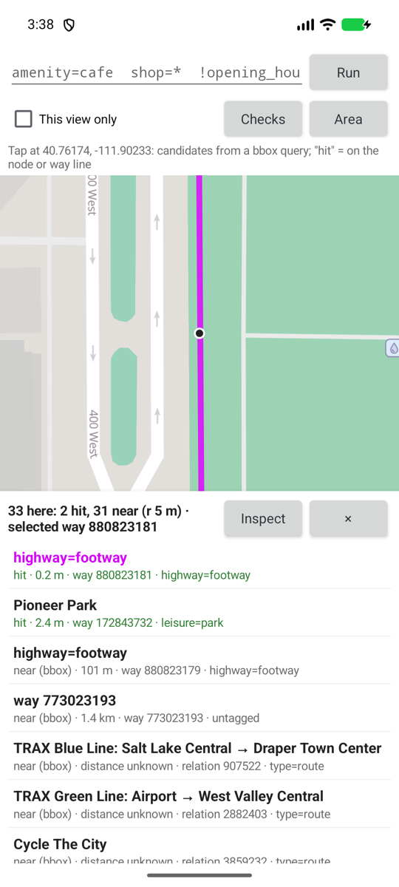
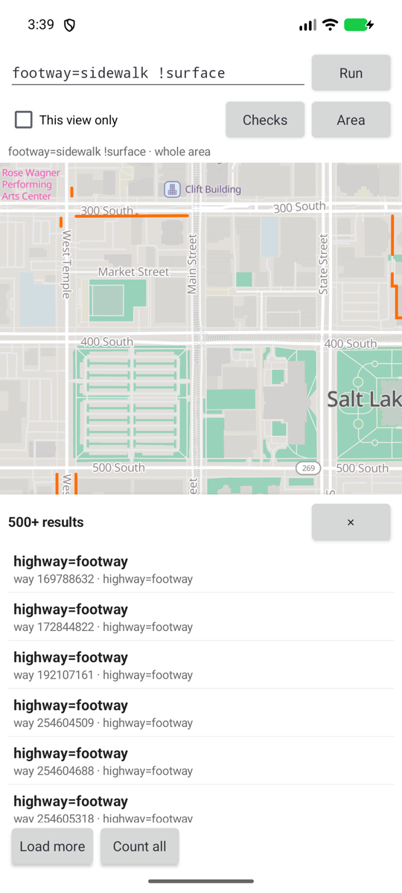
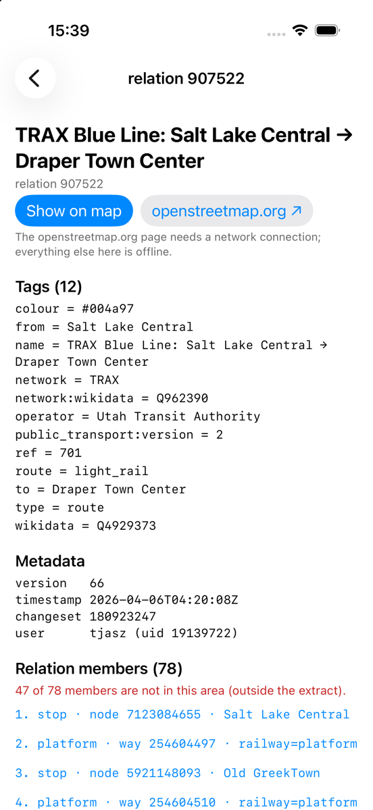
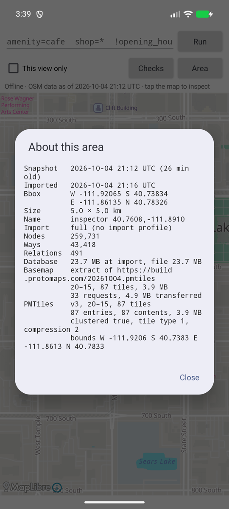
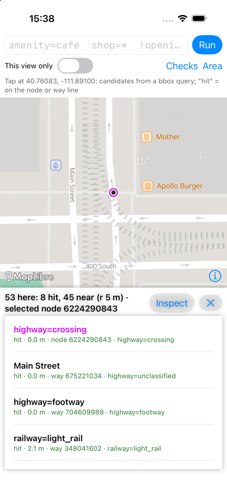
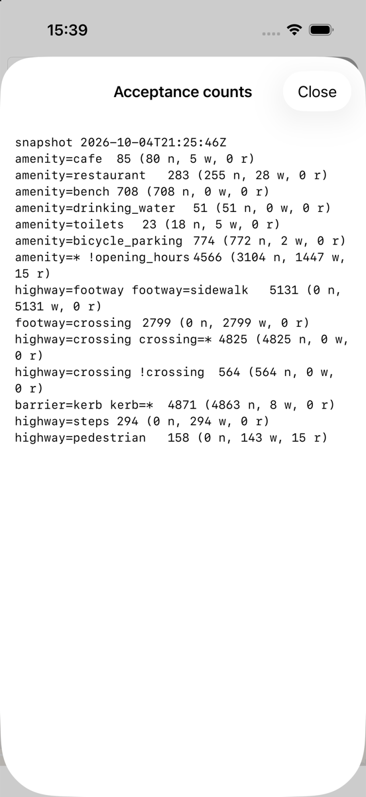
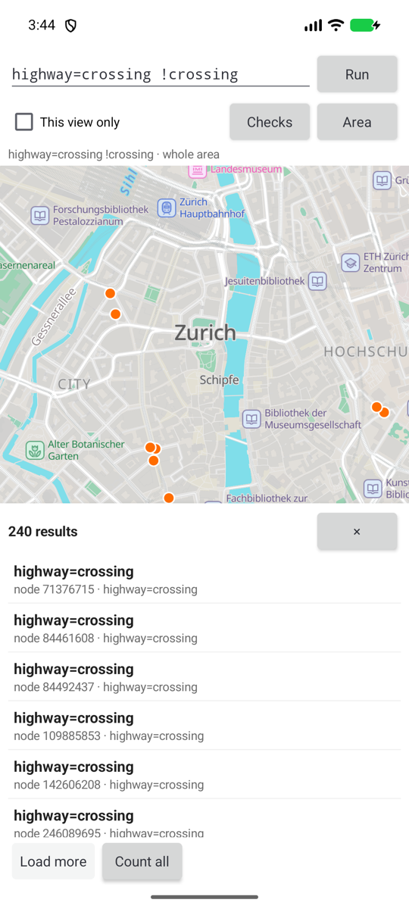
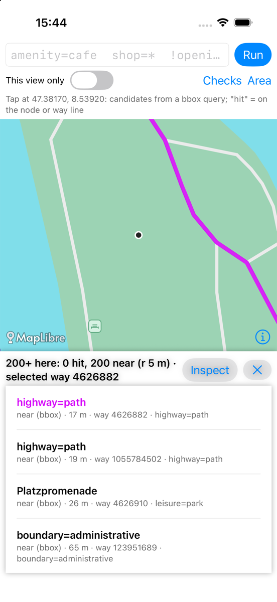

Inspector walkthrough
Inspector is the data-exploration example for OSM developers and
mappers: it shows what is in the OpenStreetMap data under your feet,
with no network. Ask "every amenity without
opening_hours" or "every highway=crossing
without crossing", tap anywhere to see which objects are
there, and follow ways, relations and nodes through their
references.
The Android module, android/inspector-app,
now uses these mechanics for Cantino Field,
the accessibility audit MVP with an app-owned findings overlay and
reviewed export. The iOS app, ios/inspector-app,
remains the pure Inspector. The query, tap, navigation, area and
acceptance behavior documented below is shared; the Android-only field
layer adds no SDK API.
Both use plain platform UI and MapLibre Native (Android 13.6.1, iOS 6.31.0). Generic app developers start with the café app. Proposal and original Inspector decisions: research note.
| Tap: mid-sidewalk | Check: sidewalks without surface | Relation members | About this area |
|---|---|---|---|
 |
 |
 |
 |
Paths for the shared Android mechanics are relative to
android/inspector-app/src/main/java/lol/osm/cantino/inspector/;
matching iOS files live in ios/inspector-app/InspectorApp/.
Android field-only files are listed in the field app
guide.
1. Download the area
| What | Code | Cantino API |
|---|---|---|
Location, typed lat,lon, or the Salt Lake City / Zürich
presets; debug override for automated runs |
MainActivity, Location.kt (copied from the
café app) |
|
| A square centred on the location; the user picks its radius on the offer screen (below) | AreaRadius (CHOICES_KM,
DEFAULT_KM), MainActivity.offerDownload |
Bbox.around |
| A full import (no import profile: a filtered area would hide what Inspector exists to show) | MainActivity.startDownload |
AreaManager.download(…, BasemapSource.Extract(planet, maxZoom = 15)) |
| One progress line (the café app shows the detailed screen) | MainActivity.ProgressLine |
AreaState |
| Refresh (same bbox) and "Download another area" (full replace; one area per app) | MapScreen.showAreaMenu |
AreaMetadata.bbox |
| Store holder, reopened after a refresh | InspectorStore (copied from
CafeStore) |
AsyncOsmStore, AreaMetadata.workId |
| Basemap build lookup | ProtomapsBuilds (copied unchanged) |
The radius choices are those of the café app, 1, 2.5, 5 or 10
km, and mean the same: half the side of the square (2.5 km is a
5 × 5 km box; the app passes twice the radius to
Bbox.around, which takes the side). Inspector preselects
2.5 km (5 × 5 km) instead of the café app's 5 km
because it keeps every object: a 5 × 5 km city centre is about 24 MB
(Salt Lake City) to 45 MB (Zürich) of database (acceptance table below),
and the file grows with the area, about four times per doubling of the
radius, more where the mapping is dense. The offer shows the box size,
not a megabyte estimate, since density varies too much for an honest
one. Refresh downloads the published bbox as it is, whatever radius is
selected now. Rationale and the café defaults: café walkthrough.
2. Query bar and checks
| What | Code | Cantino API |
|---|---|---|
k=v, k=*, !k,
k="value with spaces"; terms ANDed; exact and
case-sensitive |
QueryBar.parse (8 tests) |
TagFilter.Equals / Exists /
NotExists |
| "This view only": the visible map bbox | MapScreen.runQuery |
Query.bbox (ways and relations are candidates) |
| Pages of 500, "Load more" | Queries.page, MapScreen.loadPage |
keyset Query.after |
| "Count all" per kind, pages of 10 000, no geometry | Queries.count |
|
| Results drawn: nodes as dots, ways as lines broken at missing vertices; relations listed only | Inspect.shapes |
wayCoordinates (one call per way) |
| Android Audit checks: entrances/facilities without wheelchair data, toilets, crossings, kerbs, steps, elevators and disabled parking; each query remains editable | Checks.FIELD |
|
Errors verbatim: the parser's message, or Cantino's category and
message (a lone !key without "this view only" is Cantino's
InvalidArgument; so is a view with more than 100 000
candidates) |
MapScreen.verbatim |
CantinoException / CantinoError |
3. Tap to inspect
Cantino has no "what is here" query, so the app builds one:
| Step | Code | Cantino API |
|---|---|---|
| A box of about 20 dp around the finger (3–60 m), one bbox query without tag filters, at most 200 candidates | Inspect.tap |
Query(bbox, limit) |
| Tagged node: hit within the radius | HitTest.node |
|
| Way: distance to its nearest segment; hit within the radius. Untagged vertices are never returned by a bbox query, so the middle of a sidewalk finds the way through its line | HitTest.way, Geo.distanceToLineMeters |
wayCoordinates |
| Relation, or a large way tapped inside (a park): near (bbox). There is no point-in-polygon test | HitTest.relation |
|
| Order: hits, then near; nearest first; then node, way, relation and ID | HitTest.ORDER (7 geometry tests) |
|
| Selecting a row highlights its geometry, broken where vertices are outside the area | Inspect.shape, Geo.segments |
null entries of wayCoordinates |
4. Object navigator
| What | Code | Cantino API |
|---|---|---|
| Tags, metadata (or "not stored" and the location version for untagged nodes) | ObjectActivity.render |
OsmObject.tags, ObjectMetadata,
Node.locationVersion |
| Way nodes in order, repeats kept, tagged vertices marked, each a link | Inspect.detail |
batch get |
| Relation members with roles, each a link | Inspect.detail |
batch get |
| Missing references: "47 of 78 members are not in this area" | ObjectDetail.missingReferences |
get returns null |
| Ways using this node, best effort: ways whose bbox contains the node and whose node list has it (complete for ways in the extract; there is no node→way index) | Inspect.parentWays |
bbox Query |
| "Show on map" (back to the map, highlighted, camera fitted) | MainActivity.onNewIntent,
MapScreen.select |
|
| openstreetmap.org link, marked as needing the network | Labels.osmOrgUrl |
5. About this area
Snapshot time and age, import time, bbox and size, the import profile
(none), node/way/relation counts and database size from the import
report, the basemap download facts from
AreaMetadata.basemap, and the basemap file itself read with
PmtilesInfo.read (spec version, zooms, tiles, entries,
bounds). Code: About.kt / About.swift.
Tests
The shared mechanics retain matching Android/iOS tests (parity); Android adds field-overlay tests:
| Android | iOS | Covers |
|---|---|---|
QueryBarTest (8, JVM) |
QueryBarTests |
syntax, quoting, errors and round trip; Android also parses every field preset |
GeometryTest (7, JVM) |
GeometryTests |
segment distance, gaps, runs, hit/near, ordering, labels |
AreaRadiusTest (5, JVM) |
AreaRadiusTests |
radius → bbox (half the side), choices and default, the
radius launch option, labels, typed
lat,lon |
InspectTest (7, instrumented) |
InspectTests |
one shared real-store fixture: taps, references, missing geometry, counts, errors and paging |
FindingsTest (4, JVM) |
— | proposed-tag validation, atomic persistence, provenance, geometry anchor, GeoJSON and CSV escaping |
Acceptance, 2026-10-04
Android on the Pixel 8 emulator (Android 17, arm64), iOS on the
iPhone 17 Pro simulator (iOS 26.2). Each area was downloaded live on
both platforms at the same time, then queried after a cold launch. The
two platforms imported the same snapshot into byte-identical
databases (SHA-256 of the .sqlite files equal), so
every count must match; they do.
| Area (5×5 km) | Snapshot | Nodes / ways / relations | Database | Basemap |
|---|---|---|---|---|
| Salt Lake City, centre 40.7608, -111.8910 | 2026-10-04 21:12:59Z (Android), 21:25:46Z (iOS); same data | 259,731 / 43,418 / 491 | 23.7 MB | 3.9 MB, 87 tiles |
| Zürich, centre 47.3744, 8.5410 | 2026-10-04 21:38:41Z (both) | 424,575 / 69,701 / 1,766 | 45.3 MB | 5.6 MB, 85 tiles |
Counts over the whole area (the debug counts option logs
and shows them):
| Query | SLC Android | SLC iOS | Zürich Android | Zürich iOS |
|---|---|---|---|---|
amenity=cafe |
85 | 85 | 301 | 301 |
amenity=restaurant |
283 | 283 | 840 | 840 |
amenity=bench |
708 | 708 | 3,945 | 3,945 |
amenity=drinking_water |
51 | 51 | 477 | 477 |
amenity=toilets |
23 | 23 | 196 | 196 |
amenity=bicycle_parking |
774 | 774 | 1,395 | 1,395 |
amenity=* !opening_hours |
4,566 | 4,566 | 17,734 | 17,734 |
highway=footway footway=sidewalk |
5,131 | 5,131 | 5,568 | 5,568 |
footway=crossing |
2,799 | 2,799 | 3,869 | 3,869 |
highway=crossing crossing=* |
4,825 | 4,825 | 3,849 | 3,849 |
highway=crossing !crossing |
564 | 564 | 240 | 240 |
barrier=kerb kerb=* |
4,871 | 4,871 | 3,965 | 3,965 |
highway=steps |
294 | 294 | 2,076 | 2,076 |
highway=pedestrian |
158 | 158 | 354 | 354 |
Taps (debug tap, tap_radius 5 m), first
candidates, identical on both platforms including distances:
| Tap | SLC | Zürich |
|---|---|---|
| On a crossing node | 40.7608264, -111.8909985: hit node 6224290843
highway=crossing 0 m, hit way 675221034 (Main Street) 0 m,
hit way 704609989 highway=footway 0 m |
47.3744835, 8.5387790: hit node 663075859
highway=crossing 0 m, hit way 332455374 (Bahnhofstrasse) 0
m, hit way 1050875571 highway=footway 0 m |
| On a sidewalk | 40.76200, -111.90230: hit way 880823181
(footway=sidewalk) 2.5 m |
47.37447, 8.53890: hit way 1051685528
(footway=sidewalk) 2.3 m |
| Inside a large park | 40.76150, -111.90110 (Pioneer Park): no hit; near way 172843732
leisure=park 78 m |
47.38170, 8.53920: no hit; near way 4626910
leisure=park 26 m |
| Mid-sidewalk, no vertex near | 40.76174, -111.90233: hit way 880823181 0.17 m (its vertices are 100 m away) | 47.37445, 8.53895: hit way 1051685528 0.14 m |
Offline: the emulator and simulator are shared with other runs, so
neither was put in airplane mode. As for the iOS café app, after the downloads a cold
launch that ran a query, a tap with selection and all counts left the
app with no internet sockets: lsof -a -i -p <pid>
empty on iOS, and no /proc/net/{tcp,tcp6,udp,udp6} entry
owned by the app's UID on Android. The style references only
asset:// and the area's pmtiles://file://
archive.
| SLC, iOS: tap on a crossing | SLC, iOS: counts | Zürich, Android: crossings without crossing |
Zürich, iOS: tap inside a park |
|---|---|---|---|
 |
 |
 |
 |
All screenshots:
docs/screenshots/2026-10-04-inspector-*.png.
Running it
scripts/basemap-assets.sh # style, glyphs, sprites (both platforms copy them at build time)
scripts/build-android.sh
cd android && mise exec -- ./gradlew :inspector-app:installDebug
# Debug builds only; never real GPS in automated runs. lat/lon is sticky (clear_debug_location).
adb shell am start -n lol.osm.cantino.inspector/.MainActivity --ef lat 40.7608 --ef lon -111.8910 --ez auto_download true # [--ef radius 5]
adb shell "am start -n lol.osm.cantino.inspector/.MainActivity --es query 'amenity=* !opening_hours' --ez view_only true"
adb shell am start -S -n lol.osm.cantino.inspector/.MainActivity --es tap 40.76174,-111.90233 --ef tap_radius 5 --ei select 0
adb shell am start -S -n lol.osm.cantino.inspector/.MainActivity --es object relation/907522
adb shell am start -S -n lol.osm.cantino.inspector/.MainActivity --ez counts true # logcat tag InspectorCountsscripts/basemap-assets.sh && scripts/build-ios-inspector.sh install # SIMULATOR=… or SIMULATOR_ID=<udid>
xcrun simctl launch booted lol.osm.cantino.inspector -lat 40.7608 -lon -111.8910 -auto_download YES # [-radius 5]
xcrun simctl launch booted lol.osm.cantino.inspector -query 'amenity=* !opening_hours' -view_only YES
xcrun simctl launch booted lol.osm.cantino.inspector -tap 40.76174,-111.90233 -tap_radius 5 -select 0
xcrun simctl launch booted lol.osm.cantino.inspector -object relation/907522
xcrun simctl launch booted lol.osm.cantino.inspector -counts YES # os_log category InspectorCountsradius is the download area's radius in km, as in the
café app (one of the choices, otherwise ignored);
tap_radius is the debug tap's hit radius in metres (it was
called radius before the area radius existed). Other
options on both: zoom, about. Tests:
./gradlew :inspector-app:testDebugUnitTest :inspector-app:connectedDebugAndroidTest
and scripts/build-ios-inspector.sh test.
Known limits
- A page of results is drawn as it loads; ways cost one
wayCoordinatescall each, so a page of 500 ways takes a moment. There is no "draw everything" layer and no name search (later, after measuring). - Relations are never hit-tested and never drawn as results; a selected relation highlights at most 300 member ways.
- "Ways using this node" knows only the ways in the extract.
- "This view only" uses the whole map view, including the part under the results panel.